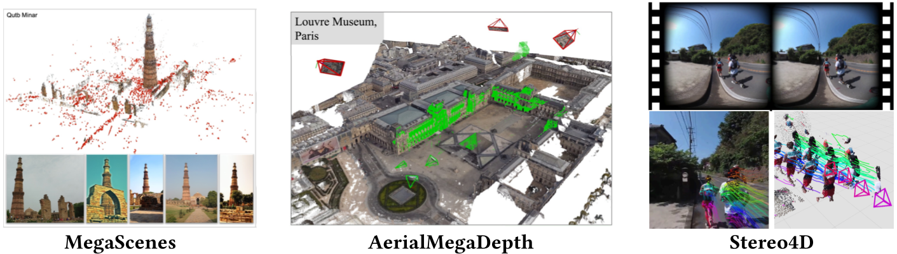
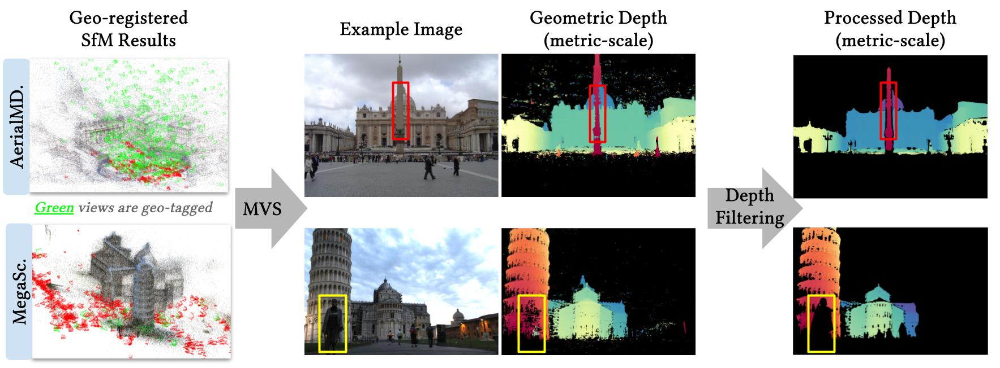
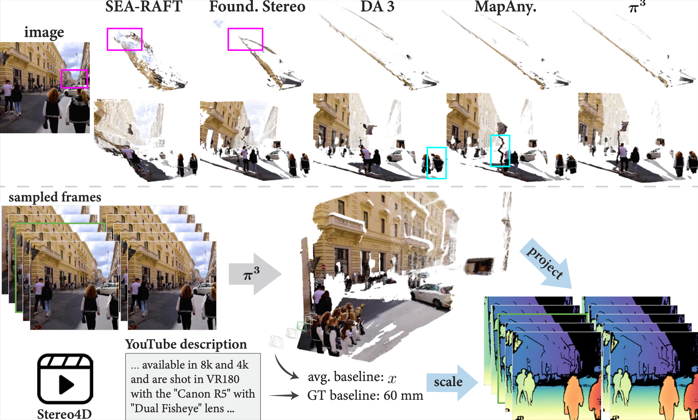
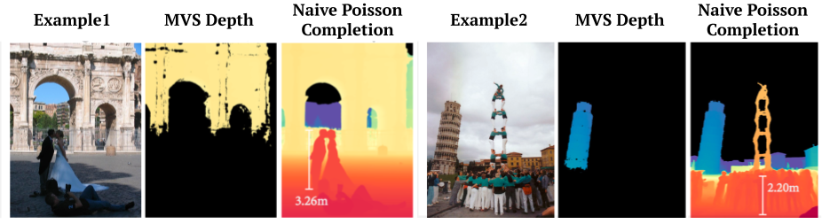
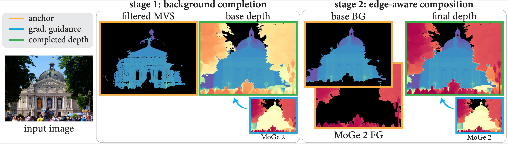
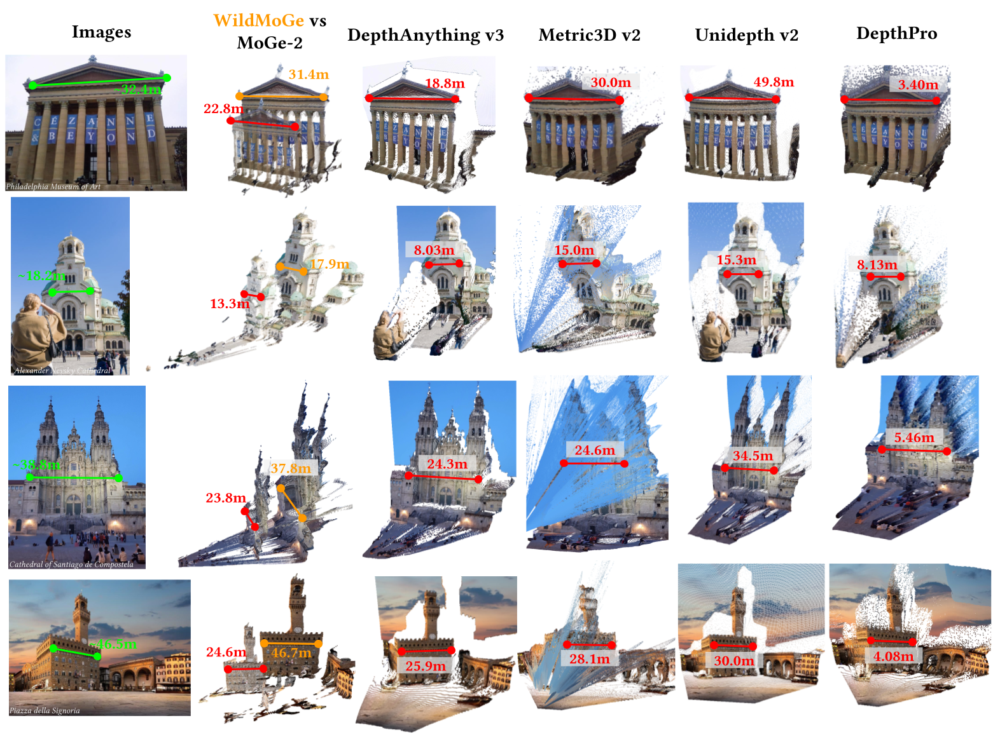
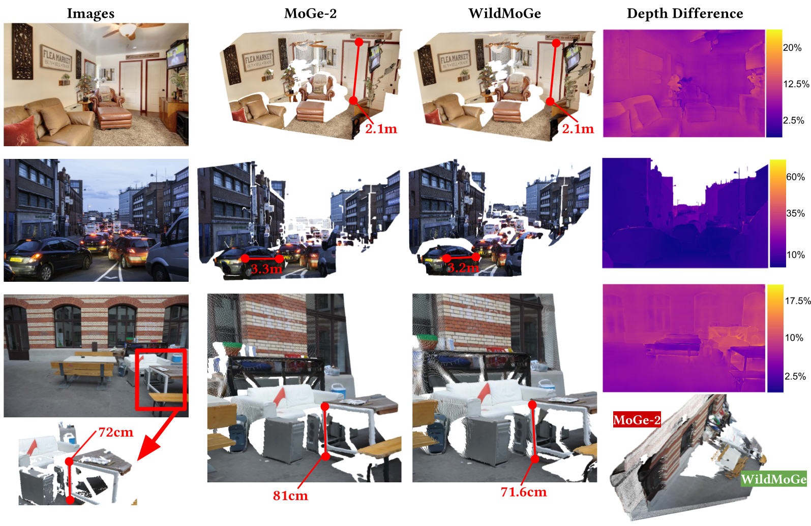
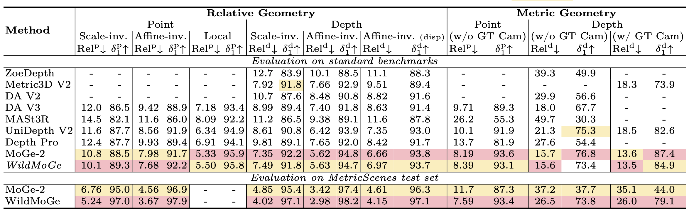

MoGe-2 tends to predict a smaller scale for background structures on in-the-wild scenes, while WildMoGe recovers the correct scale. On ETH3D scenes, they produce similar results, with WildMoGe slightly more accurate. The videos first show MoGe-2's result, then WildMoGe's result.
SELECT AN EXAMPLE
Metric scale monocular geometry estimation has seen significant progress through large-scale data aggregation, yet current foundation models suffer from a persistent ''scale-collapse'' phenomenon: distant landmarks and vast landscapes are metrically underestimated. We hypothesize that this performance gap stems from a training data bottleneck, where existing metric-scale datasets are hardware-constrained to homogenous vehicle-captured LiDAR or short-range indoor scans, or consist of synthetic data that lacks the semantic complexity of the physical world. To bridge this gap, we curate a new metrically-grounded, in-the-wild dataset that we call MetricScenes, gathered from a variety of sources including Internet photo collections and stereo imagery. We estimate camera poses and initial depth maps for each scene using off-the-shelf methods, and recover absolute scale from geo-tagged metadata as well as known stereo camera baselines. We also improve the quality of depth maps derived from MetricScenes via a new two-stage Poisson completion method. Fine-tuning MoGe-2 on our dataset significantly mitigates scale-collapse and achieves superior metric accuracy in unconstrained, open-domain scenes while maintaining state-of-the-art performance on standard benchmarks.
To fill critical gaps and add diversity missing in existing real-world metric datasets, we leverage widely available visual sources, including Internet photo collections and stereo imagery. These sources provide the environmental and semantic variety missing from existing hardware-constrained datasets. We reconstruct camera viewpoints and initial depth maps via off-the-shelf methods, then recover absolute physical scale by leveraging geolocated landmark metadata and stereo camera baselines. Specifically, we aggregate data from MegaScenes, AerialMegaDepth, and Stereo4D, and develop pipelines to extract metric-scale depth maps in each case.


Metric depth from Internet photo collections. Geo-tagged images obtained from online mapping sites can be used to scale SfM results to absolute metric scale. AerialMegaDepth is reconstructed with pseudo-synthetic views rendered from Google Earth and scenes are scaled accordingly. MegaScenes contains natively unscaled SfM results. We augment these SfM models with georeferenced street-level views to scale the geometry to physical dimensions. After scaling and running MVS, we apply a depth filtering method to remove transient objects(yellow box) and filter out depth-bleeding regions(red box).

Depth maps derived from SfM and MVS lack transient foreground objects. To fill these gaps, naive Poisson completion uses the MVS depth map as a fixed boundary condition, and rely on the gradient guidance of model-predicted depth maps to reconstruct the missing areas.

To remedy this, instead of relying solely on background constraints, our key insight is to use both background and foreground depths as joint anchors while carefully optimizing object edges. We propose to fuse MVS depth maps (background) with MoGe-2 predicted depth maps (foreground), with a two-stage edge-aware Poisson completion algorithm.

WildMoGe is a MoGe-2 ViT-Large-Normal model fine-tuned the on our MetricScenes dataset.


We evaluate on our curated test set and the standard benchmarks to demonstrate that our model is comparable to state-of-the-art performance in specialized environments while effectively bridging the gap between hardware-constrained training data and unconstrained, in-the-wild scenarios.
